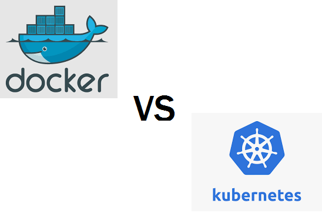

-
This website will be divided into 3 parts. Firstly defining what containers are, and then describing the two main containers: Docker and Kubernetes
-
Containers
Containers are where applications are ran in isolated user space in an operating system, known as containerization. Each container has its own system, like Linux or Windows, and under each container, multiple applications are run. The container shares the kernel of the host OS with other containers.
Both Docker and Kubernetes are containerization technologies
-
Docker
Docker is a platform that provides applications the ability to package and run in containers. Containers is an isolated environment where many containers can run at the same time on a given host. Docker can significantly reduce the delay between writing code and running it in production.
Docker benefits both the developers as well as the system administrators. Developers can write code without worrying about the system that it will ultimately be running on. There are also thousands of programs already designed to run in a Docker container.For system administrators, it reduces the number of systems needed because of its small footprint
-
Kubernetes
Kubernetes is a platform for working with and managing containers in general, including docker. Meaning that it helps manage applications (which are made up of thousands of containers) in different environments(physical/virtual machines or even cloud environment). Kubernetes gives you means to do deployment, monitoring, and an easy way to scale.

Strengths and Weaknesses
Strengths of Kubernetes are: it can improve productivity, and the solutions that it provides are feasible for many years as kubernetes ecosystem is growing incredibly fast and new products supporting different needs are being released everyday. It also helps to make the application run more stable by rapid updates to change the software without downtime.
Few drawbacks of Kubernetes are: it can overdo for simple applications as it is a powerful texhnology that allows to run software in cloud environment at a large scale efficiently. This is beneficial for high computing resource needs, but is not ment for smaller requirements. Due to its complexity it can reduce productivity at certain times.
Cloud Technology